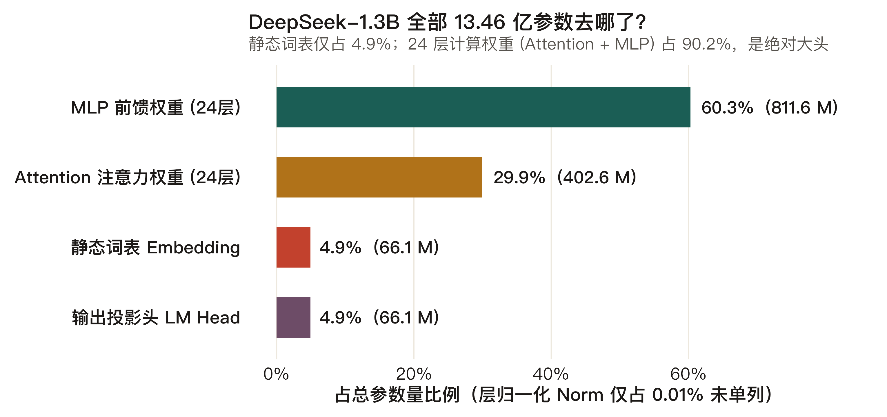

- 总体观先行：学习大模型最忌讳一上来就掉进局部公式与英文缩写里。从最高处俯瞰，任何大语言模型本质上都只是一个超大型数学函数 Y = F(X)。
- 看清输入与输出：函数的输入 X 是代表前文词元的输入张量；经过内部 24 层线性与非线性变换后，输出 Y 是融合了上下文的输出张量，并最终映射为词表上所有候选词的预测概率分布。
- “说话”即循环词语接龙：大模型不会先打好整篇腹稿再动笔，它干的唯一一件事就是按概率抽样选出下一个词，把新词拼回原句末尾，再喂给自己预测再下一个词。
- 真机数据祛魅：以本地开源模型
deepseek-coder-1.3b-base为例，它的全部“智慧”就装在219个权重张量、共计1,346,471,936个固定数字里，没有一行神秘的“意识代码”。
一、 为什么学大模型必须“先见森林，再看树木”？
很多同学第一次翻开 AI 教程时，常被迎面扑来的 Transformer、Attention、RoPE、Softmax 砸得晕头转向，还没看清方向就已经在细节的灌木丛里迷了路。破局之道只有六个字：先见森林，后看树木。
回想高中数学里最基础的函数 y = f(x) = kx + b：往机器 f 里塞进自变量 x，内部固定参数 k（斜率）和 b（截距）做一次乘加运算，就吐出因变量 y。现在，请把这个高中函数放大十亿倍——大语言模型（LLM）本质上就是一个超大型数学函数 Y = F(X)：
- 自变量 X（输入张量）：喂给函数的是一句话切分出的多个词元（Token），每个词元查表变成一条数字向量，并排堆叠成名叫输入张量（Input Tensor）的数字方阵。
- 函数体 F（24 层变换）：函数内部排列着十几亿到上千亿个固定参数。输入张量穿过层层矩阵拉伸、旋转与非线性激活，把前文语境层层注入当前词，最终算出输出张量（Output Tensor）。
- 因变量 Y（词表概率分布与抽样）：最后一步把输出张量转化为全词表候选词的预测概率分布（总和为 100\%），再像掷多面骰子一样抽样选出下一个词。
二、 真机解剖 DeepSeek 1.3B：13.46 亿参数究竟装在哪里？
在本系列 12 期连载中，我们将全程解剖本地运行的开源大模型 deepseek-ai/deepseek-coder-1.3b-base。打开它保存在硬盘上的权重文件（2.69 GB），里面没有任何魔法，只有整整齐齐的 219 个权重张量，合计 1,346,471,936（约 13.46 亿）个浮点数参数。
这台机器像一栋 24 层摩天大楼：门口词表有 vocab_size = 32256 个词元编号；每个词进门后用一条 hidden_size = 2048 维的向量表示；中间堆叠着 24 层结构相同的 Transformer 楼层（每层含 16 个注意力头、每头 128 维，以及扩维至 5504 维的前馈网络）。下面是这 13.46 亿参数的真实资产清单：
| 模型核心部件 | 对应权重模块 | 张量数 | 真实参数量（个） | 占比 | 在超级函数 Y=F(X) 中的角色 |
|---|---|---|---|---|---|
| 1. 词表嵌入层 | embed_tokens | 1 | 66,060,288 | 4.91% | 一楼接待处：形状 [32256, 2048]，把词编号查表变成 2048 维输入张量 |
| 2. 多头注意力层 | 24 × self_attn | 96 | 402,653,184 | 29.90% | 24 层语境情报局：每层含 Q/K/V/O 矩阵，把前文语境融汇注入当前词 |
| 3. 前馈神经网络 | 24 × mlp | 72 | 811,597,824 | 60.28% | 24 层特征深加工车间：对融汇语境后的向量做升维与非线性提炼 |
| 4. 层归一化参数 | 49 × RMSNorm | 49 | 100,352 | 0.01% | 24 层楼层稳压器：校准向量长度，防止 24 层连乘导致数值爆炸 |
| 5. 词表输出头 | lm_head | 1 | 66,060,288 | 4.91% | 顶楼打分台：形状 [32256, 2048]，把输出张量映射为 32,256 个词的得分 |
| 总计 | 全模型汇总 | 219 | 1,346,471,936 | 100% | 完整的超级函数 Y = F(X) |

你会发现：超过 90% 的参数（29.90% 注意力 + 60.28% 前馈网络）都花在了中间 24 层重复堆叠的矩阵变换上。一楼负责把文字变成向量，中间 24 层负责把前文语境层层注入当前词，顶楼 lm_head 配合指数归一化 Softmax，把第 24 层的输出张量变成 32,256 个候选词的概率榜。
三、 超级词语接龙实录：“我在苹果公司吃了一个苹果”后面接什么？
我们把贯通本系列的核心例句——“我在苹果公司吃了一个苹果”——喂给 DeepSeek 1.3B。分词器首先把它切成 6 个词元（Token）：
我在（id=23098）→ 苹果（id=17144）→ 公司（id=2804）→ 吃（id=3509）→ 了一个（id=13556）→ 苹果（id=17144）。
注意一个奇妙细节：句中前一个“苹果”是科技巨头，后一个“苹果”是水果，但刚进一楼时它们的编号完全相同（都是 17144 号）！模型如何在爬完 24 层楼后区分它们，将是我们后续追踪的主线。现在先看这 6 个词构成的 [1, 6, 2048] 输入张量穿过 24 层后，连续运转 4 步词语接龙的真机实测数据：
| 接龙步 | 当前喂入函数 F(X) 的输入文本 | 选中最高概率词 | 选中 ID 与概率 | 词表概率榜前五名（Top-5 候选词真实概率） |
|---|---|---|---|---|
| 第 1 步 | 我在苹果公司吃了一个苹果 | ， | id=19385 (37.38%) | ① ， (37.38%) ② 。 (14.64%) ③ <字节> (2.71%) ④ 的 (2.71%) ⑤ 之后 (2.54%) |
| 第 2 步 | 我在苹果公司吃了一个苹果， | 然后 | id=7759 (5.75%) | ① 然后 (5.75%) ② 你 (4.48%) ③ 苹果 (3.95%) ④ 但是 (3.08%) ⑤ 我 (2.71%) |
| 第 3 步 | 我在苹果公司吃了一个苹果，然后 | 又 | id=3114 (5.30%) | ① 又 (5.30%) ② 在 (4.40%) ③ 把 (3.88%) ④ ， (3.65%) ⑤ 你 (3.22%) |
| 第 4 步 | 我在苹果公司吃了一个苹果，然后又 | 吃 | id=3509 (23.52%) | ① 吃 (23.52%) ② 在 (11.11%) ③ 把 (4.93%) ④ 买 (4.09%) ⑤ 去 (2.64%) |
看懂这张表，你就看穿了大模型聊天的底牌：第 1 步模型算完 32,256 个词的概率后，选中 “，”（37.38%）拼回句末；第 2 步以 7 个词为输入选出 “然后”（5.75%）；第 3 步选出 “又”（5.30%）；到了第 4 步，因为前文有“吃了一个苹果，然后又”，24 层注意力立刻锁定动作，把 “吃”（id=3509）的概率推高到 23.52%！四步接龙合成了“我在苹果公司吃了一个苹果，然后又吃”。每次挑第一名叫贪心解码，按概率比例摇号叫随机抽样。
四、 本系列 12 期全景路线图：我们将如何一层层拆空这台机器？
有了 Y = F(X) 的总体观，我们接下来 11 期就能像拼乐高一样按部就班地深挖每个部件：第 2 期先掌握破除黑话恐惧的 5 条学习铁律；第 3～5 期潜入计算机底层，看二进制与 UTF-8 的 243 个合法字节如何通过 BPE 算法滚雪球生成 Token；第 6～7 期进入高维几何空间，看词元如何堆叠成三维张量，并靠矩阵拉伸旋转与向量点积表达语义；第 8～9 期逐层追踪 24 层 Transformer 与 16 个注意力头如何区分“苹果公司”与“吃苹果”；第 10～12 期揭晓模型如何从一张随机噪音表训练出智慧，并在推理时冻结权重完成奇幻漂流。
从马尔可夫数《奥涅金》字母，到香农的纸条猜词游戏
用“前文统计概率”来玩词语接龙，思想火种早在 1913 年 的俄国圣彼得堡就被点燃了。
当时 57 岁的数学家安德烈·马尔可夫（Andrey Markov）为了反驳“只有互不影响的独立事件才符合统计规律”的偏见，干了一件苦力活：他把普希金长诗《叶夫根尼·奥涅金》开头的 20,000 个俄文字母抄在方格纸上，靠手算统计元音与辅音的交替概率。他算出：只要前一个字母是元音，后一个字母是辅音的概率高达 87.2%！他用铁证揭示：语言虽然千变万化，但后一个字出现的概率强烈依赖于前文——这就是著名的马尔可夫链。
1948 年，信息论之父克劳德·香农（Claude Shannon）在贝尔实验室发表《通信的数学理论》，做了一个著名的“英文单词接龙实验”：如果闭眼随机摸词，拼出来全是乱码；但如果每次只根据前一个单词的搭配概率去猜下一个词，就能拼出 THE HEAD AND IN FRONTAL ATTACK ON AN ENGLISH WRITER... 这样像模像样的句子。今天 DeepSeek 和 GPT 所做的，不过是用 24 层高维张量函数 把香农当年靠翻书查前一个词的游戏，升级成了同时俯瞰前文上万个词的超级接龙。
既然大模型底层只是高中数学里的函数 Y = F(X)、向量旋转与概率抽样，为什么很多同学看到 AI 论文和满天飞的行业新词，还是会一头雾水、产生深深的恐惧？面对“每个汉字都认识，连在一起却看不懂”的理工科魔咒，初学者该如何破局？ 下一期，我们将奉上 5 条硬核破局忠告！
- 【3Blue1Brown 动画】《直观理解 GPT 与 Transformer》：B 站搜索
3Blue1Brown GPT，用三维几何动画直观感受超级函数 Y=F(X) 的概率预测过程。 - 【交互式实验室】Transformer Explainer：浏览器打开
poloclub.github.io/transformer-explainer，在线追踪输入句子穿过各层变成 Top-5 预测词概率条的全过程。 - 【开源模型主页】
deepseek-ai/deepseek-coder-1.3b-base：在 HuggingFace 官网查看本系列实验模型的config.json，核对24层架构与32,256词表配置。
deepseek-coder-1.3b-base (32,256 词表 · 24 层 · 13.46 亿参数) 实测生成